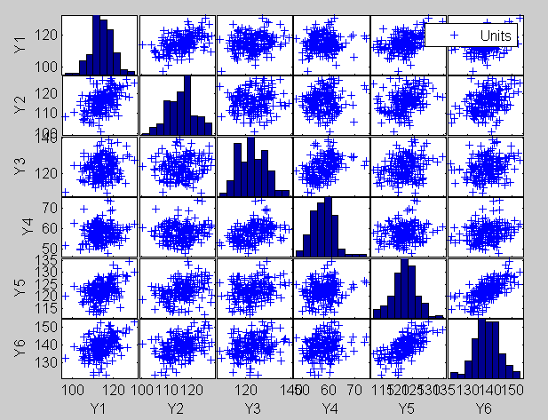
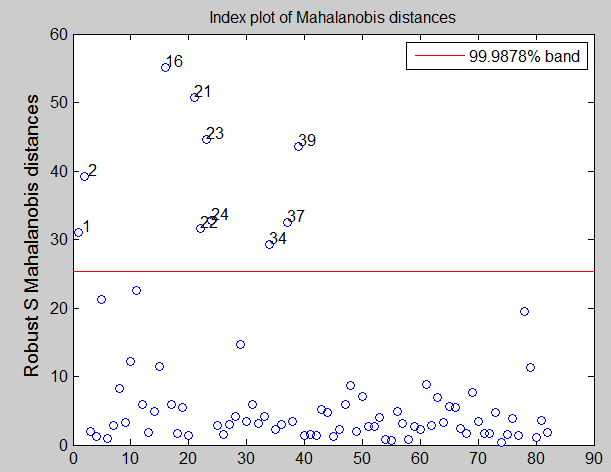
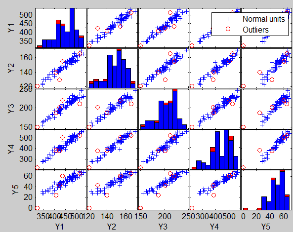

S and MM estimators in multivariate analysis
S-estimates are obtained minimizing an M-scale estimate (see the guide or page Smult for more details). MM estimates keep the estimate of the scale fixed (coming for example from the S procedure) and reestimate the location and the shape matrix in order to improve the low efficiency of S-estimators.
Example 1
The code below loads the heads dataset and launch the S outlier detection procedure
% Load the data
load('head');
Y=head.data;
% Use function FSM (Forward search in multivariate analysis with automatic outlier detection purposes)
[out]=Smult(Y,'plots',1,'conflev',1-0.01/size(Y,1));
No outlier is declared using the Bonferroni threshold.


Example 2
The code below loads the mussels dataset and performs an automatic outlier detection procedure in the original scale and then in the BoxCox transformed scale.
Analysis on the original scale
load('mussels.mat');
Y=mussels.data;
[out]=Smult(Y,'plots',1,'conflev',1-0.01/size(Y,1));


Analysis on the transformed scale
load('mussels.mat');
Y=mussels.data;
la=[0.5 0 0.5 0 0];
v=size(Y,2);
Y=normBoxCox(Y,1:v,la);
Smult(Y,'plots',1,'conflev',1-0.01/size(Y,1))


The units declared as outliers using multivariate S estimators are exactly the same of the FSM procedure (see reference help page).